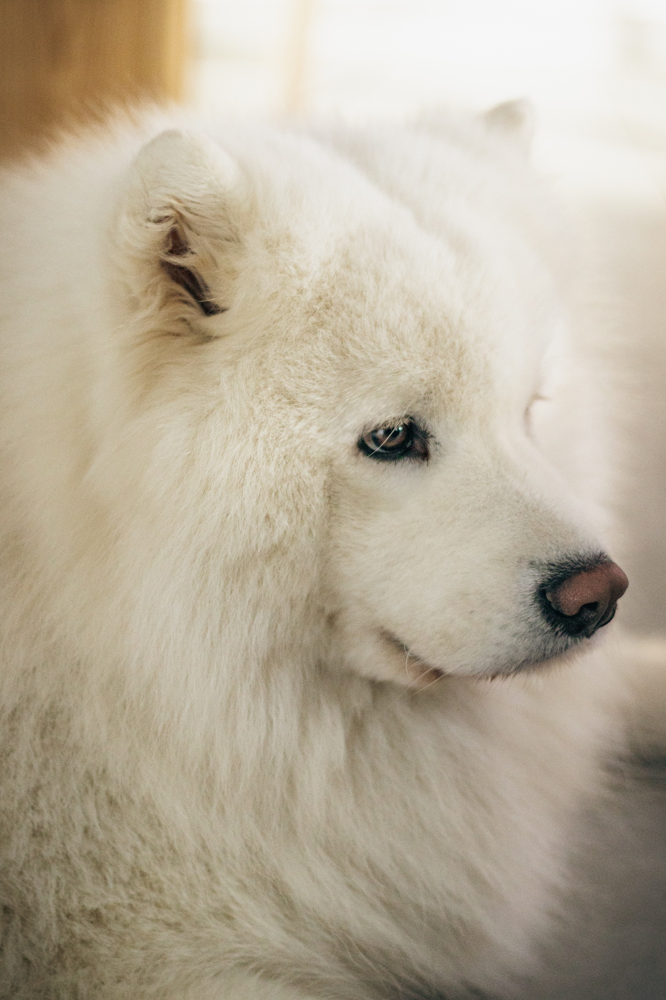
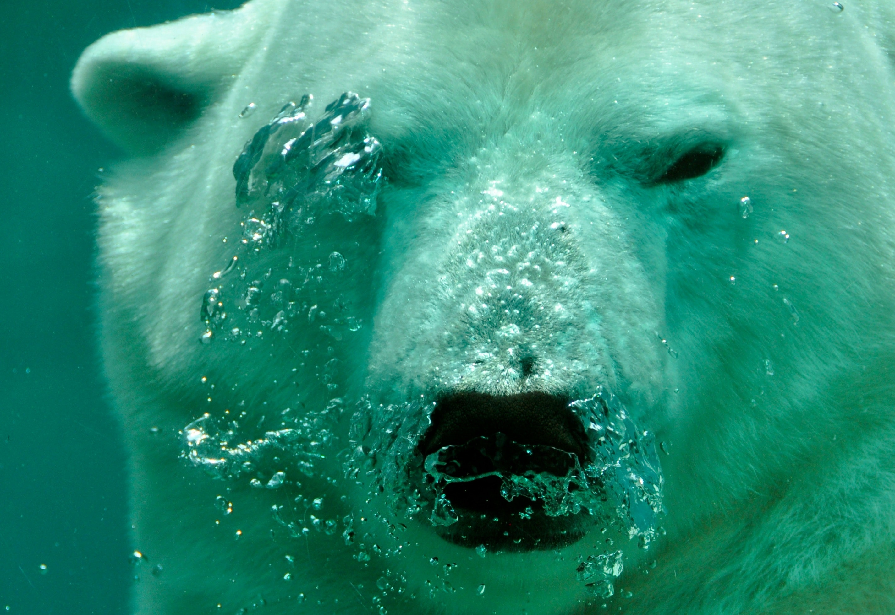
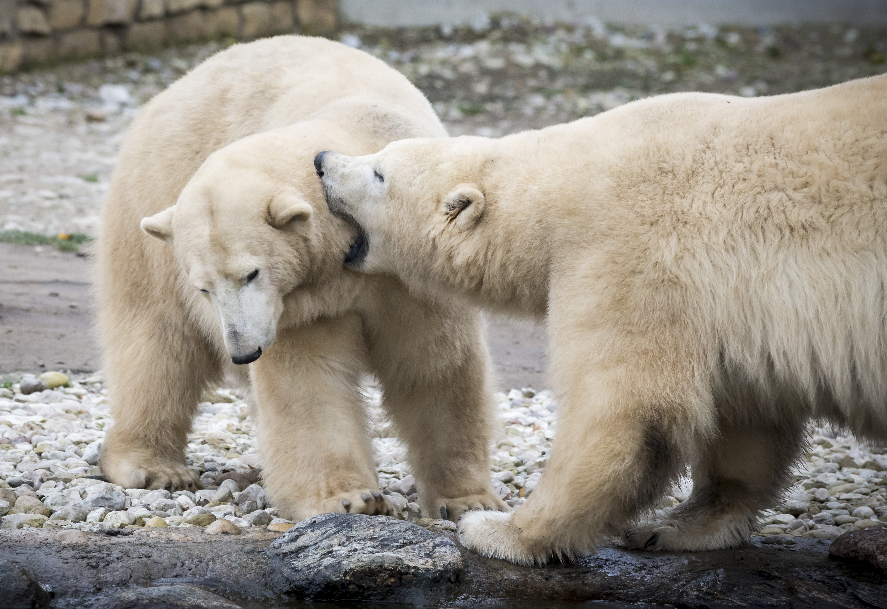
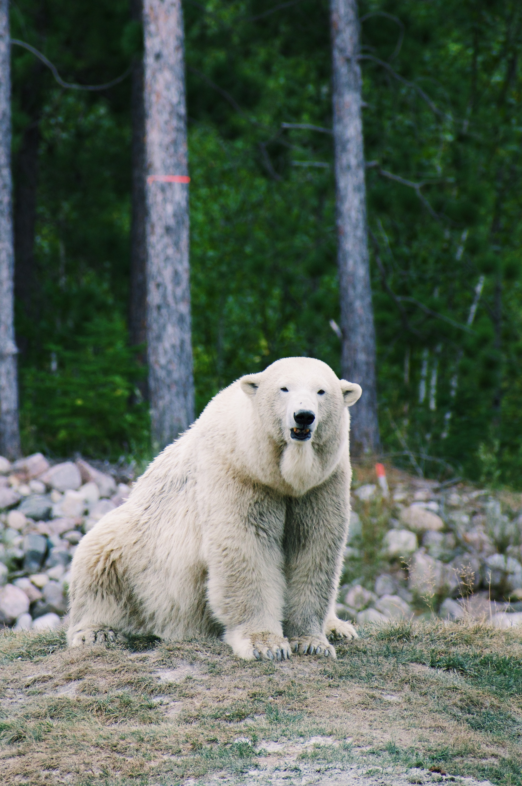
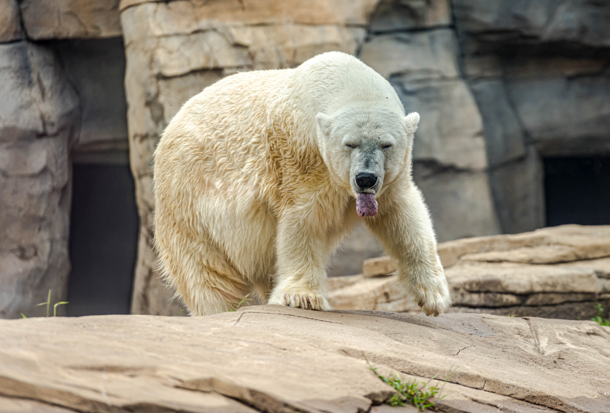
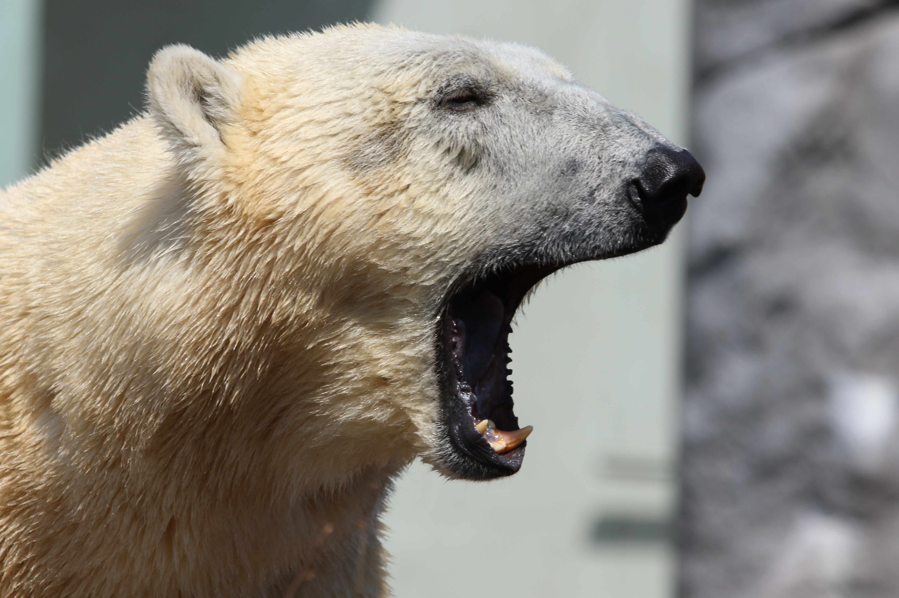

Der Eisbär (Ursus maritimus), auch Polarbär genannt, ist eine Raubtierart aus der Familie der Bären (Ursidae).
Polarbären sind... Moment mal, das ist ja gar kein Polarbär!? Wie hat sich denn dieser niedliche Hund hier eingeschlichen?
Wie der lateinische Name Ursus maritimus (zu Deutsch: See-Bär) andeutet, sind Polarbären exzellente Schwimmer.
Vielleicht machen Sie sich beim nächsten Strandurlaub keine Sorgen mehr um weiße Haie, wo doch auch weiße Bären in den Untiefen lauern können?
Anders als gewisse andere maritime Bären (Blaubären...) spinnt der Polarbär selten Seemannsgarn.
Seine Freizeit verbringt er lieber mit Cocktails und Sonnenbädern.
Falls Sie bei den ganzen Polarbär-Bildern jetzt denken: Lecker! Entgegnen wir: Pfui!
Das Jagen und Verspeisen von Polarbären ist selbstverständlich nur Polarbären gestattet.
Das Gerücht Eisbären würden nach Speiseeis schmecken ist bekanntermaßen haltlos.
Wegen ihrer Vorliebe für Pelze stehen Polarbären bei Tierschützern stark unter Kritik.
Was meinen Sie, wie viele Nerze für diesen Pelz ihr Leben lassen mussten!?
Auf Kritik reagieren Polarbären allerdings oft gereizt.
Diesem Exemplar hier wurde lediglich nahe gelegt gelegentlich auch mal zu lächeln.
Diese Trotzreaktion ist selbstverständlich total unangebracht, von jemandem, der schon so alt ist, dass die Haare weiß sind, sollte man doch mehr Reife erwarten können!
Nach dieser Polarbären-Expidition sind wir jetzt alle müde. Ab ins Bett, hopp, hopp!